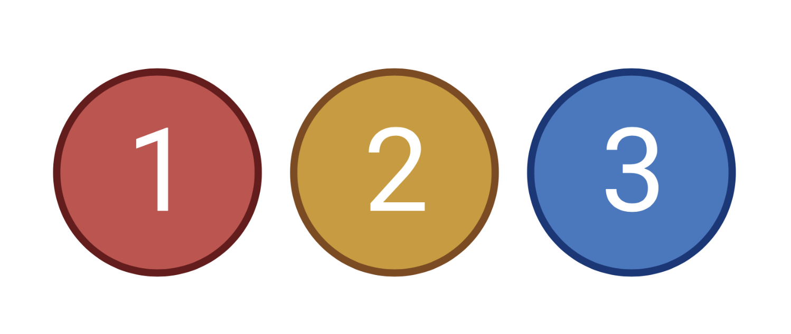

Chapter 3 Making a count table from HTSeq output files

Many of the software packages used for the analysis of RNA-Seq datasets will accept a table of count data. We can make such a table from our individual htseq-count outputs with a few lines of simple code in R. Open a new Jupyter notebook and name it “Suppl02-Count_table”.
We will first set the working directory to the location where the htseq files are located.
Next we will create a list of htseq file names from the files located in this directory by using the list.files function to list files with the extension .htseq.
To create the count table we will first create a blank object in R we will call counts. This will be used to store the data from the htseq data we will read in. After this we can use a loop which will read in the first htseq file from the list we made. It will then add the second column of this file (which contains the count data) to the counts object and then rename the row names using the gene names found in the htseq file in first column. The loop will then restart, this time using the second file in the list and add the data from this file, and so on.
counts <- c() # create blank object called counts
for( i in 1:length(files)){ # loop through the 'files' list
x <- read.table(file=files[i], sep="\t", header=F) # read in the htseq file
counts <- cbind(counts, x[,2]) # add second column of htseq file to 'counts'
rownames(counts) <- x[,1]
# name the row names as gene names taken from the first htseq column
}To look at the start of the data frame we have created type
As you can see we now have a data frame where the row names are labelled with the Gene IDs and each column has the count data from a sample. However, we are missing the sample names for each column. We will add them using the following command, which will set the column names based on the input file names but removing the end of the file name (so we only keep the sample name).
Everything is now looking as we expect. However, HTSeq-Count adds extra information to the end of the output files which we do not want to include in our final table.
We will remove the last 5 rows from our data frame.
We can now write this to a csv file by typing
You can now close and halt your notebook.